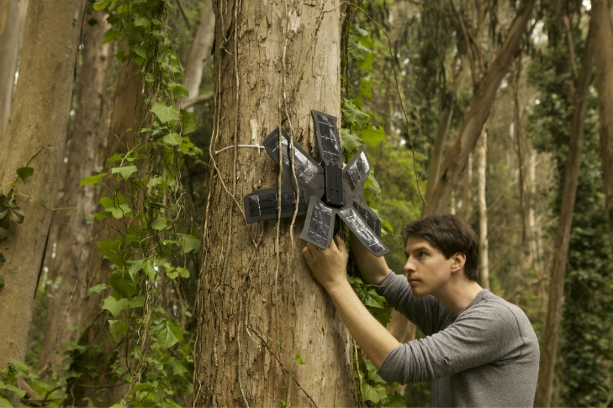

Development of Artificial Intelligence(AI)
The concept of Artificial Intelligence (AI) originated in the 1950s when scientists from esteemed universities, such as Carnegie Mellon University, Stanford University, and the Massachusetts Institute of Technology, envisioned that machines could precisely simulate aspects of human intelligence. Their perspective was rooted in the belief that machines could replicate certain facets of human cognitive abilities. The image at at the left is the first AI robot developed at Stanford, which was a symbol of rapid innovation in Tech during 1950s. However, during the 1980s and 1990s, AI development faced a period of stagnation, commonly referred to as the AI winter, marked by slower progress than anticipated.
In recent times, we find ourselves in the AI Era, where machines’ interaction with the outside world has surpassed previous expectations. Modern machines exhibit remarkable sophistication, challenging conventional perceptions of their capabilities. For instance, computers consistently outperform humans in complex games like AlphaGo, traditionally considered to require high intelligence. This progress has translated into tangible benefits, with robots now capable of identifying tumors more accurately than trained doctors, and supercomputers performing complex calculations for activities such as rocket launching.
The initial beneficiaries of AI advancement were major domains like tech industries, healthcare, and profitable niches in the business world. This is logical, given that the global economy operates on the principles of demand and supply. The innovation in one industry, particularly the tech sector, has cascading effects, benefiting other domains like agriculture and the environment. What started as a tech revolution has evolved into a critical problem-solving tool in Environmental Domain.
From developing nations to developed ones, the environmental sector has tapped into the immense potential of AI and its powerful computing capabilities to address pressing conservation challenges. Examples abound, including AI interventions to safeguard oceans from pollution, the implementation of advanced routing plans for efficient e-waste collection, and the optimization of aviation routes to minimize emissions. These applications underscore how AI is making significant contributions globally to mitigate the environmental impact of human activities. The examples provided illustrate how AI’s integration into various sectors is not only transformative but also instrumental in mitigating the adverse effects of human activities on the environment.
How AI is Solving the Environmental Issue
Microsoft’s AI lab, known as AI For GOOD LAB, has recently demonstrated the potential of AI in tackling environmental challenges, specifically in reducing wild animal poisoning in Masai Mara National Park. The innovative solution involves deploying sophisticated cameras equipped with artificial intelligence (AI) in the heart of the park. These smart cameras utilize special algorithms, such as Convolutional Neural Networks (CNNs), to analyze satellite images and monitor the surroundings. This goes beyond merely protecting the environment; it addresses a pressing issue where indigenous people were using poison to kill wildlife due to increasing human-wildlife conflict. Thanks to the integration of remote sensing and AI, significant progress has been made to identify potential conflict areas. Full informatoin at: Microsoft Research, 2023.

Another remarkable example showcases the use of AI in repurposing old phones to address illegal deforestation. Initiated by an AI startup,Rainforest Connection, 2015, this project involves placing unused phones in trees, powered by solar energy. The image in the right shows how phones are attached to the tree. These phones serve as audio sensors, detecting the distinctive sounds of chainsaws—an indicator of potential illegal logging activities. The recorded sounds are transmitted to a central station equipped with a powerful AI system, TensorFlow by Google, which distinguishes chainsaw sounds from other ambient noises. Upon identification, the AI system promptly notifies relevant authorities, enabling them to intervene and prevent further illegal logging. This transformative application of AI, detailed in the scientific journal Sustainability, underscores its real-time problem-solving capabilities in environmental conservation.
The impact of AI extends further with platforms like Fruitpunch AI, where I personally participated in some projects utilizing technologies like RestNet and Deep Learning. This platform engages volunteers from around the world, contributing their AI expertise to various environmental projects. Examples include detecting air pollution plumes and identifying vulnerable coral reefs. The output from these projects is generously shared with stakeholders without any charges. Non-profit initiatives like Fruitpunch AI play a pivotal role in leveraging AI for environmental conservation, making substantial contributions in leveraging AI power in the backwarded areas of research.
While AI presents significant potential and yields quantifiable results globally, a critical consideration arises regarding its cost-effectiveness. AI enables data-driven decision-making at minimal costs, and its scalability allows solutions developed for one region to be expanded to cover larger areas. However, a potential challenge emerges concerning the “little to no cost” aspect of AI solutions.
Low cost AI might disrupt conservation history in developing nations
In the context of developing nations, successful conservation practices have often relied on active community participation. Local communities join forces to preserve their environment, leading to both environmental benefits and direct employment opportunities. For instance, the community forest conservation practice in Nepal stands out as one of the most successful models globally NASA, 2016. This practice involves transferring forest management to local communities, empowering them to sustainably utilize the resources. However, with the integration of AI, decision-making tends to lean heavily on data, particularly remotely sensed data. While this enhances efficiency, it also raises concerns about limiting job opportunities for locals, as AI does not require active community participation.
In the Amazon rainforest, where indigenous communities have played a crucial role in conservation efforts, the introduction of AI-powered monitoring systems has sparked debates. Automated drones equipped with AI algorithms can efficiently monitor vast areas, detect illegal logging, and assess biodiversity. While these technologies aid in swift responses to environmental threats, they also raise concerns about job displacement for indigenous forest monitors who traditionally perform these tasks. The shift towards automated monitoring may inadvertently sideline the invaluable traditional knowledge of indigenous communities, impacting their roles in preserving the delicate balance of the rainforest ecosystem.
Similarly, in Australia, where Indigenous Rangers have long been at the forefront of land management and conservation, AI applications are being explored for biodiversity monitoring. AI-driven tools can analyze large datasets to track wildlife movements and assess ecological changes. However, this shift towards technology-driven conservation may diminish the active involvement of Indigenous Rangers, who possess deep-rooted knowledge about local ecosystems and their intricate connections with the land. The potential marginalization of indigenous perspectives in decision-making processes could lead to suboptimal conservation outcomes.
In developing nations, where conservation heavily relies on external funding, the potential shift away from community involvement to AI-driven approaches poses challenges. External funding typically compensates conservationists and locals for their active participation in conservation efforts. Using AI means less of the people will be involved in conservation, again encouraging locals to exploit forest resources. Besides, several concerns regarding the ethical use of AI in these rich natural resource areas make conservation more fragile. The delicate balance between technological advancement and preserving indigenous wisdom remains a critical consideration for sustainable conservation practices.
Ethical Bias in Environmental conservation in developing nations
Jobin et al. [16] conducted a thorough examination of AI ethics guidelines, identifying a total of 84. The classification of these guidelines revealed 11 distinct principles, including transparency, justice and fairness, non-maleficence, responsibility, privacy, beneficence, freedom and autonomy, trust, sustainability, dignity, and solidarity. Despite this comprehensive framework, a notable concern arises – the perceived oversight of the human factor in these ethical considerations.
When applying AI in environmental conservation, diverse challenges surface, underscoring the need for careful consideration of potential biases. A significant issue stems from a lack of awareness among stakeholders regarding available technologies in forestry. The terminology associated with AI, such as “artificial intelligence,” can be perplexing, potentially leading to disinterest among those unfamiliar with the technology. Addressing this challenge requires a focus on capacity-building, utilizing case studies and pilot demonstrations to enhance understanding and establish realistic expectations.
Ethical concerns in the use of AI extend to areas with vulnerable communities, where the potential misuse of AI technologies necessitates the establishment and adherence to ethical standards. Concepts such as free, prior, and informed consent, data security, and permitted applications become crucial in ensuring ethical practices. For example, community capacity development plays a vital role in achieving equitable outcomes. However, initiatives like the Fruitpunch AI platform, where global volunteers contribute to environmental projects, raise concerns about data integrity and the risk of misuse despite the platform’s signature requirements.
The challenges further manifest in the suitability of AI technologies for harsh field conditions, demanding robust applications resistant to climatic variations, animal damage, and vandalism. Inadequate planning may result in equipment failures, eroding trust in the technology. Attention to supporting infrastructure, particularly connectivity, emerges as a crucial factor for effective field deployment. Moreover, the limited commercial scalability of current AI applications, often driven by enthusiasts and startups, impedes sector investments and overall scalability. The lack of user-friendly interfaces hinders practical adoption by practitioners, contributing to the challenges in large-scale development.
Adding to the complexity are uncertainties associated with AI, especially regarding reliability and efficacy. The evaluation of reliability before practical application becomes imperative, given potential uncertainties in data and expert knowledge. In species-rich tropical forests, challenges arise in differentiating features due to a lack of adequate labeled data. The reliability of AI outputs depends on substantial training data and expert knowledge. Addressing these biases necessitates a comprehensive approach encompassing awareness-building, adherence to ethical standards, robust technology, commercial viability, and careful consideration of uncertainties in AI applications for environmental conservation.
While the discussion thus far has centered on biases in AI components, an equally important consideration is directed towards non-human components. Biodiversity, possessing both instrumental and intrinsic value, prompts an exploration of psychology in biodiversity conservation. Recent research suggests that people prioritize intrinsic value over instrumental value. This insight raises the possibility of AI being utilized more for species perceived to have intrinsic value. Hence, there is an urgent need for moral considerations for non-humans in environmental conservation with AI. Exploring these non-human aspects becomes imperative to mitigate biases and foster a more comprehensive and ethical approach to AI applications in environmental conservation (Owe & Baum, 2021)
Conclusion
While AI proves to be a powerful tool in environmental conservation, particularly in addressing specific challenges like wildlife protection and illegal logging, careful consideration is needed to strike a balance between its cost-effective solutions and the crucial role of community participation, especially in developing nations. The synergy of AI and community engagement may pave the way for more holistic and sustainable environmental conservation practices globally. And regarding AI ethics, global effort is being made to regulate AI in its potential use case. Europe has become the first continent to prepare AI regulatory frameworks as of Dec 11, 2023 and US congress is working on detailed frameworks for AI ethics. We all can be hopeful about AI regulation, but it will take long time to be enforced and implemented in the field. All we can do is hope for Optimistic future of AI use in environment conservation.
Media Links
Fruitpunch AI. Fruitpunch
Microsoft AI at Masai Mara. Video
AI regulation Europe Europe AI regulation
References
O’Reilly. Getting Started with AI
Jobin, A., Ienca, M., & Vayena, E. (2019). The global landscape of AI ethics guidelines. Nature Machine Intelligence, 1(9), 389–399. https://doi.org/10.1038/s42256-019-0088-2
Owe, A., & Baum, S. D. (2021). Moral consideration of nonhumans in the ethics of artificial intelligence. AI and Ethics, 1(4), 517–528. https://doi.org/10.1007/s43681-021-00065-0
Schirpke, U., Tasser, E., Borsky, S., Braun, M., Eitzinger, J., Gaube, V., et al. (2023). Past and future impacts of land-use changes on ecosystem services in Austria. Journal of Environmental Management, 345(May), 118728. https://doi.org/10.1016/j.jenvman.2023.118728
Acharya, K. P. (2002). Twenty-four years of community forestry in Nepal. International Forestry Review, 4(2), 149–156. https://doi.org/10.1505/IFOR.4.2.149.17447
Schirpke, U., Tasser, E., Borsky, S., Braun, M., Eitzinger, J., Gaube, V., et al. (2023). Past and future impacts of land-use changes on ecosystem services in Austria. Journal of Environmental Management, 345(May), 118728. https://doi.org/10.1016/j.jenvman.2023.118728